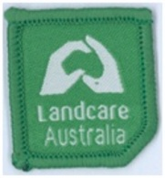
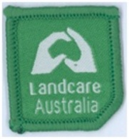
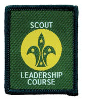
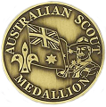
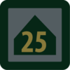
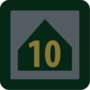
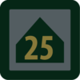
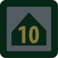
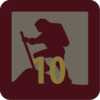
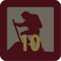

Other Scout Badges
Scoutcraft Badge
The Scoutcraft badge (pdf) is the first badge a Scout must earn and facilitates entry into the Scout Troop. It's purpose is to teach or reinforce basic Scout skills.
Patrol Activity Badges
For their Patrol Activity badge Scouts must undertake an activity which they plan and run with a minimum of adult involvement. Each cord requires a Scout to do a Patrol Activity.
Special Interest Badges
There are eight other badges that may be worn. The following four may be used as Proficiency badges: Amateur Radio Operator, Deaf Sign Language, Faith Awareness and Language Emblem. The following three may be used as Target badges: First Aid, Landcare, World Scout Environment.

 



Their Service, Our Heritage (pdf)

Scout Leadership Course
Scouts who have completed their Pioneer badge can attend a Scout Leadership Course to improve their skills as a Patrol Leader or Assistant Patrol Leader. This course is a requirement for the Australian Scout Medallion.

Australian Scout Medallion
The highest badge a Scout can receive is the Australian Scout Medallion, which combines a number of key learning elements into one project, from the initial planning right through to the final self assessment. Some examples of previous projects include the organisation of Cub Pack holidays, coordinating a Clean Up Australia Day site, and fundraising to purchase new equipment. To be eligible for this award, a Scout must have attended a Scout Leadership Course and achieved the Adventurer Cord.
Venturer Link Badge
The Link badge (pdf) is the last you will do before you move up into Venturers.
Camper Award Badge


 



The Camper Award Badge depicts the total number of nights spent camping while on approved Scouting activities.
Walkabout Award Badge


 

The Walkabout Award Badge is earned for the total kilometres travelled under human power through a youth member's time in Scouting.